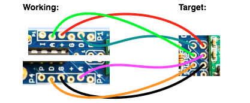
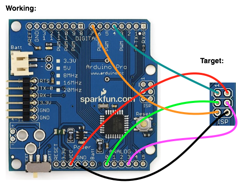

Hi,
I now have my all new emonTx & Nanode RF up and running :-) I am having a few problems though and wondered if anyone has cured similar issues?
I'm using the latest Nanode code and TX code (single CT) - everthing is standard issue.
The data coming through from TX seems to drop a few messages and then pick one up - the spacing seems equal, ie get one drop 3 or get one drop 2... looks like below.
The RX & TX are right next to each other so range cannot be an issue and both have the right frequency - ie 868 on both.
The next problem is the Nanode which definately has stability issues and seems to crash within minutes - this is the second one I have tried (first being ready built) so not so sure its the build. I do have the extra cap in place on the ISP header too.
Any thoughts would be great - cheers.
[webClient]
DHCP status: 0
{rf_fail:1}
0
DHCP status: 0
RF recieved
{rf_fail:0,ct1:2,battery:3227}
1
DHCP status: 0
{rf_fail:1}
2
DHCP status: 0
{rf_fail:1}
3
DHCP status: 0
{rf_fail:1}
4
DHCP status: 0
RF recieved
{rf_fail:0,ct1:2,battery:3227}
5
DHCP status: 0
{rf_fail:1}
6
DHCP status: 0
{rf_fail:1}
7
DHCP status: 0
{rf_fail:1}
8
DHCP status: 0
RF recieved
{rf_fail:0,ct1:2,battery:3227}
9
DHCP status: 0
{rf_fail:1}
10
Re: New build with erratic RF ?
Hi, I think I have tracked this down to the Nanode - the Simple RFM12B sketch works well as does the Pachube sketch.... but in all cases the Nanode falls down after a minute or two. The hunt goes on :-)
Re: New build with erratic RF ?
Another update and a couple of questions if thats OK:
- I have updated the Nanode RF bootloader to Optiboot: https://github.com/thiseldo/NanodeBootLoader worked well and although the Nanode falls over every few minutes it does now pick itself up again thanks to your watchdog code :-)
- I was hoping to slow the RFM12B baud down to about 1200 to increase range - inserting the following line after the initialise usually does the trick but for some reason this causes no data to get exchanged - any idea why? rf12_control(0xC68F);
- I saw your optiboot 4.4 update on github - just 2 files - can I use these to update the TX bootloader via the Arduino IDE as I did for the Nanode?.... any pointers would be great :-)
Getting there :-)
Cheers,
Re: New build with erratic RF ?
Yes, the optiboot bootloader on git hub can be used to updated bootloader to Optiboot. Just use a spare arduino connectred as follows and upload the isketch:


Thanks to JeeLabs.org for connections diagrams: http://jeelabs.org/2011/05/29/summary-of-isp-options/
Not sure about the RF problem, I've never tried to reduce the speed before. Try the jeelabs forum, also lots of info on RFM12 on JCW's weblog: jeelabs.org. He is the author of the RFM12 library.
Re: New build with erratic RF ?
Hi Glyn,
I am hoping to use a TinyUSBisp to flash via the Arduino IDE - is your bootloader different to the Uno one and if so is there a way to flash via the IDE burn bootloader option? If not flashing the Uno bootloader would be straight forward. Thanks again.
Re: New build with erratic RF ?
The emonTx bootloader is slightly different. It has a different fuse setting that reduces the brown out voltage to be lower than 2.7V, more info here: http://openenergymonitor.org/emon/node/342. But inital tests have suggested that running the emonTx at voltages lower than 2.7V results in lots of RF errors. Therefore the modification may not have much of an effect. The emonTx bootloader also uploads emonTx single CT firmware sketch.
The normal Uno bootloader will work fine.
Re: New build with erratic RF ?
Hi Glyn, Thanks for your help on this, much appreciated. I think I got it loaded fine via an Arduino - good to try something new. Do you happen to know if there is a sketch which will provide the current bootloader on a board?
Re: New build with erratic RF ?
Robur
Did you track down the cause of the unstable RF at all? I have a similar issue, but get the rf_fail:1 almost constantly.
The Emonbase ethernet is Ok, as it gets a IP, and posts fine to emoncms. EmonTX seems fine also as the current sensing is working OK (via serial), and with the test_tx and test_rx sketches the 2 devices chatter cheerfully.
Re: New build with erratic RF ?
I'm new here so I only just read this post but I had the same issue with poor transmission reliability (I suspect this is happening to most people but you wouldn't know unless you checked). I cured it by dropping the baud rate down to about 4kbs by adding this line after RF12 initialisation...
rf12_control(0xc657); // approx 3.918 Kbps, i.e. 10000/29/(1+0x57) kbps
With this value there are no errors, even at a distance where the original code won't work at all.
I'm not sure why this didn't work for you robur, presumably you did change the rate at both the transmitter and the receiver?
Re: New build with erratic RF ?
Are your aerials the correct length on both transmitter and receiver? I had the same problem mentioned above (would drop packets from one side of a desk to the other!)
Trimming a couple of mm off one of the aerials fixed it.